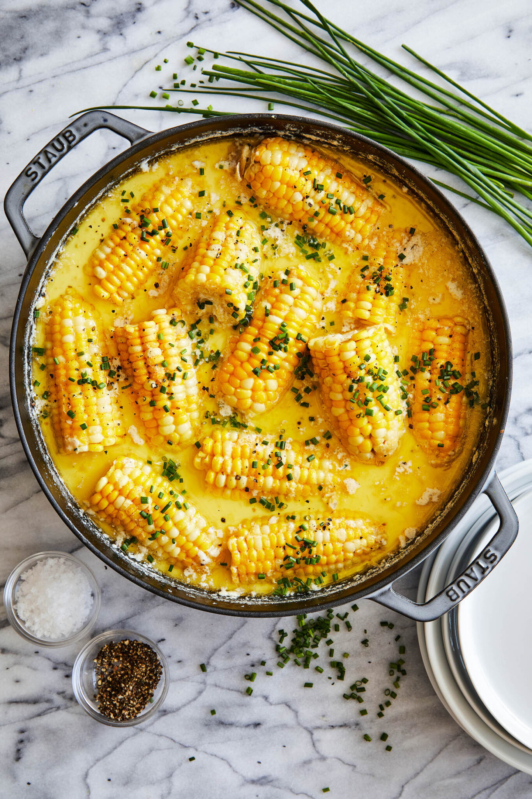

Boiled corn

Description
Ingredients
- 3 cloves garlic, halved
- 2 cups whole milk
- 1/2 cup unsalted butter, cubed
- 1/4 cup brown sugar
- 6 ears corn
- 3 tablespoons chopped fresh chives
Steps
- Combine 4 cups water, garlic, 1 1/2 teaspoons salt and 1 1/2 teaspoons pepper in a large stockpot or Dutch oven over medium heat. Bring to a boil; reduce heat and simmer for 10 minutes.
- Stir in milk, butter and brown sugar. Bring to a boil; working carefully, add corn, reduce heat and simmer until just tender, about 10 minutes.
- Serve immediately, garnished with chives, if desired.